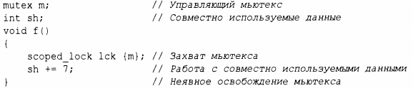
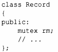
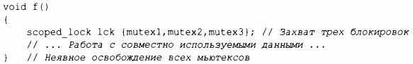
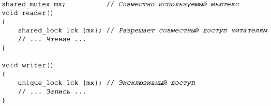

⇐15.4 Возврат результатов 15.6 Ожидание событий⇒
Иногда задания должны совместно использовать некоторые данные. В этом случае доступ к ним должен быть синхронизирован, чтобы одновременно к ним могло обращаться не более одного задания. Опытные программисты рассматривают это как упрощение (например, не возникает никаких проблем со многими заданиями, одновременно считывающими неизменяемые данные), тем не менее мы рассмотрим, как обеспечить выполнение условия, чтобы одновременно доступ к заданному набору объектов имело не более одного задания.
Основополагающим элементом решения этой задачи является mu tex (mutua exc usion object - объект взаимоисключения, мьютекс). Поток thread захватывает mutex с помощью операции lock ():
Тип lck выводится как scoped_lock<mutex> (§6.2.3). Конструктор scoped_lock захватывает мьютекс (вызовом m.lock()).Если другой поток уже захватил мьютекс, наш поток ожидает ("блокируется"), пока другой поток не завершит свой доступ к данным. Как только другой поток завершит свой доступ к общим данным, scoped_lock освобождает мьютекс (вызовом m.unlock()).Когда мьютекс освобождается, потоки, ожидающие его, возобновляют выполнение ("пробуждаются"). Средства взаимного исключения и блокировки находятся в заголовочном файле <mutex>.
Обратите внимание на использование идиомы RAII (§5.3). Использовать дескрипторы ресурсов, такие как scoped_lock и unique_lock (§15.6), проще и намного безопаснее, чем явно блокировать и разблокировать мьютексы.
Соответствие между совместно используемыми данными и мьютексом является обычным: программист просто должен знать, какой мьютекс каким данным соответствует. Очевидно, что это чревато ошибками, и в равной степени очевидно, что мы будем пытаться прояснить соответствие с помощью различных языковых средств. Например:
Не нужно быть гением, чтобы догадаться, что для записи Record с именем rec необходимо захватить rec.rm перед обращением к другим данным в rec, хотя комментарий или лучшее имя могли бы читателю помочь.
Для выполнения некоторых действий нередко требуется одновременный доступ к нескольким совместно используемым ресурсам, что может привести к взаимоблокировке. Например, если threadl захватывает mutexl, а затем пытается захватить mutex2, в то время как thread2 захватывает mutex2, а затем пытается захватить mutexl, то ни одно из заданий не сможет выполняться. scoped_lock помогает разрешить эту ситуацию, позволяя нам получить несколько блокировок одновременно:
Этот scoped_lock разрешит продолжить работу только после захвата всех аргументов-мьютексов и при этом никогда не окажется в заблокированном состоянии, удерживая мьютекс. Деструктор scoped_lock обеспечивает освобождение мьютексов, когда поток покидает область видимости.
Обмен информацией через совместно используемые данные - средство довольно низкоуровневое. В частности, программист должен разработать некоторые способы, чтобы знать, какая работа выполнялась, а какая не выполнялась различными заданиями. Поэтому применение совместно используемых данных уступает понятию вызова и возврата. С другой стороны, некоторые программисты убеждены, что совместное использование должно быть более эффективным, чем копирование аргументов и результатов. Это действительно может быть так, когда речь идет о больших объемах данных, но блокировка и разблокировка являются относительно дорогостоящими операциями. Кроме того, современные машины очень хорошо копируют данные, особенно компактные, такие как элементы векторов. Поэтому не выбирайте способ обмена через совместно используемые данные из-за "эффективности" без размышлений и измерений.
Базовый mu tex позволяет одновременно получать доступ к данным одному потоку. Но одним из наиболее распространенных вариантов обмена данными является много читателей и один писатель. Эта идиома "блокировки читателя-писателя" поддерживается мьютексом shared_mutex. Читатель захватывает "совместно используемый" мьютекс так, что другие читатели все еще могут получить доступ к данным, в то время как писатель требует эксклюзивного доступа. Например:
